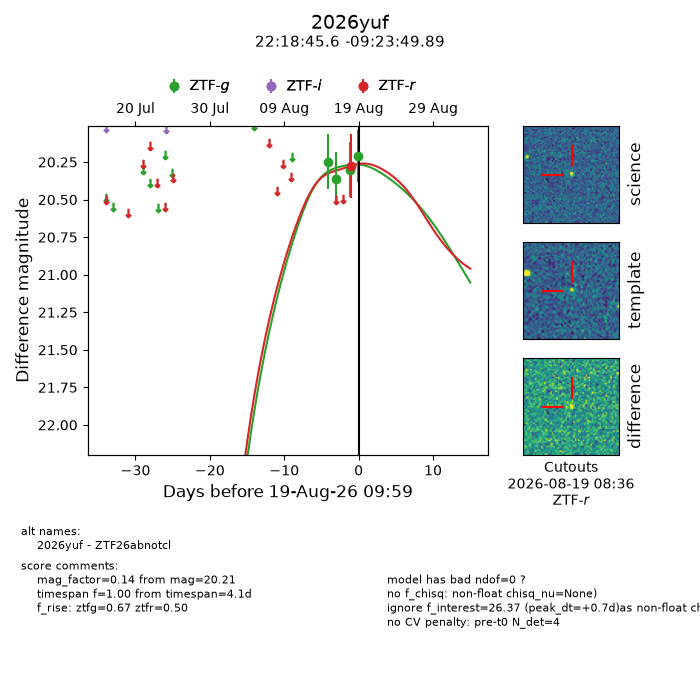
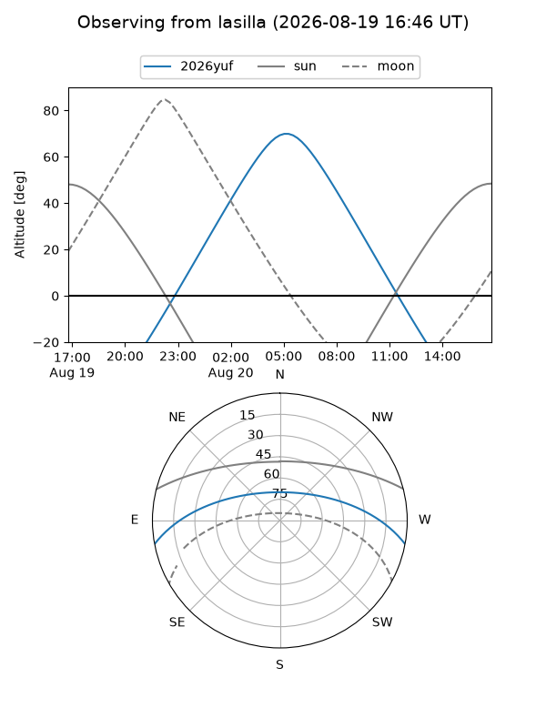
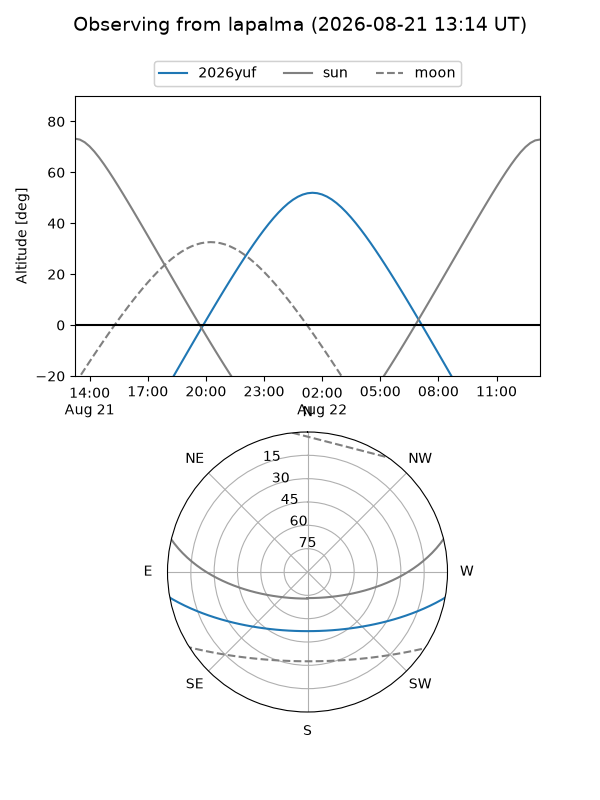
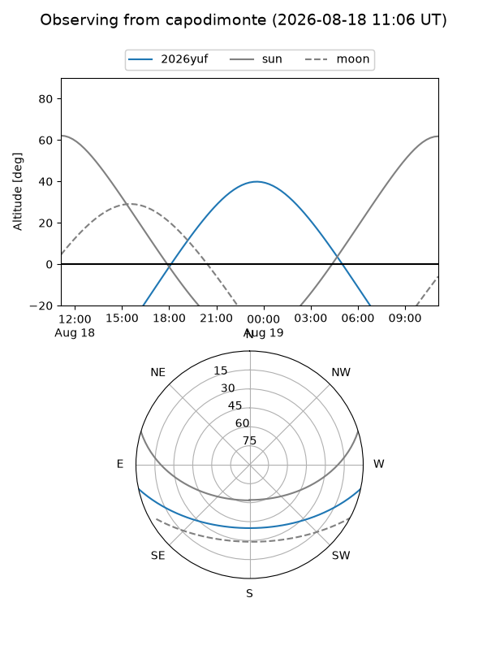
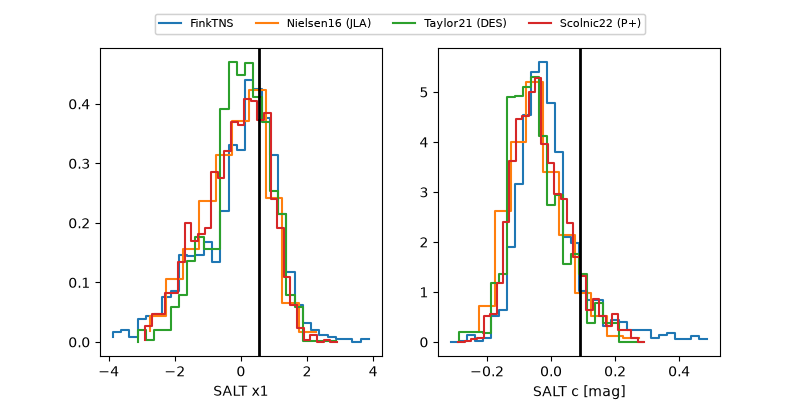

2026yuf
Target 2026yuf at 2026-08-19 10:02
Aliases and brokers:
FINK-ZTF: ztf.fink-portal.org/ZTF26abnotcl
Lasair-ZTF: lasair-ztf.lsst.ac.uk/objects/ZTF26abnotcl
ALeRCE-ZTF: alerce.online/object/ZTF26abnotcl
YSE-PZ: ziggy.ucolick.org/yse/transient_detail/2026yuf
TNS name: wis-tns.org/object/2026yuf
Direct TNS query: direct search
alt names
ZTF26abnotcl (ztf,fink_ztf)
2026yuf (tns,yse)
Coordinates:
equatorial (ra, dec) = 334.6898,-9.39719
equatorial (HMS+DMS) = 22:18:45.56,-09:23:49.89
galactic (l, b) = (51.7995,-49.88537)
Flags:
TNS type: nan
peak dt: +0.7
Photometry:
last ztfg=20.21, ztfr=20.28
4 ztfg, 1 ztfr detections
Lightcurve

Visibility



Additional plots
